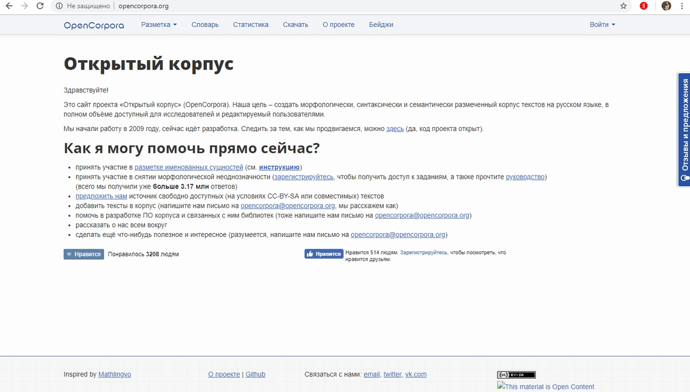

Моя личная страничка в интернете
Михайлова Ксения Дмитриевна
- лучше горькая правда, чем сладкая ложь, нет у меня никаких научных интересов
-
учусь в НИУ ВШЭ на факультете филологии
-
люблю театр, пошлую молли, эмму стоун и ютуб канал сметана тв

"Как современные технологии могут помочь филологу"
Главный источник информации для филолога - это Интернет. К филологическим ресурсам относятся электронные энциклопедии, а также сайты различных библиотек. Сайты университетов — основные носители филологической информации. Просмотр авторских сайтов позволяет быть в курсе всего, что происходит в научном мире.
Мой анализ сайтов
Данный сайт не очень удобен в использовании, потому что мало картинок, мелкий шрифт и неудобная навигация. Тем не менее, если закрыть глаза на все недостатки, то можно увидеть на сайте много полезной информации.
Главная страница сайта выглядит пустой, а вставки "лайков" и "мне нравится" больше напоминают программу для накрутки этих лайков, чем сайт словаря. Ещё один минус - регистрация, которая отнимет у вас время. Если честно, то я не регистрировалась на этом сайте, поэтому так и не разобралась в его сути.

Типичный литературно-исторический сайт. "Рукописное" название и бежевый цвет. В принципе, сайт довольно удобный, есть "поиск по сайту", а всё самое глвное о писателе выведено на основную панель.
Две поисковые строки "проверка слова" и "справочное бюро" делают сайт быстрым в использовании и заставляют не задерживаться на нём. Но если у вас есть лишняя минутка, то вы можете найти много интересного в разделе "Новости" или "Библиотека".
Если честно этот сайт немного пугает. Непонятная расстановка, ужасно мелкий курсивный шрифт. Прикольно, конечно, то, что можно найти ту или иную информацию аж на двух языках. Но дизайн берёт своё... А ещё внизу очень противная реклама, даже слишком противная!
Русский филологический портал
Ну не люблю я когда сайт выполнен мелким шрифтом и с вообще непонятной информацией. "Главная панель" состоит из пяти каких-то ссылочек в левом углу, которые не сразу то и заметишь. "Новости портала" вообще не понятно для кого сделаны, без очков не разглядишь. А эта реклама прям посередине... В общем неинтересно!